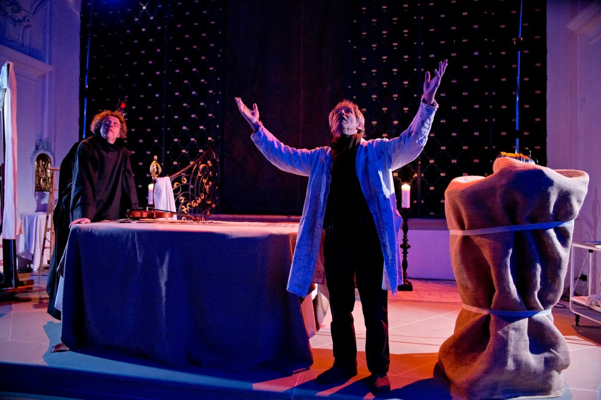
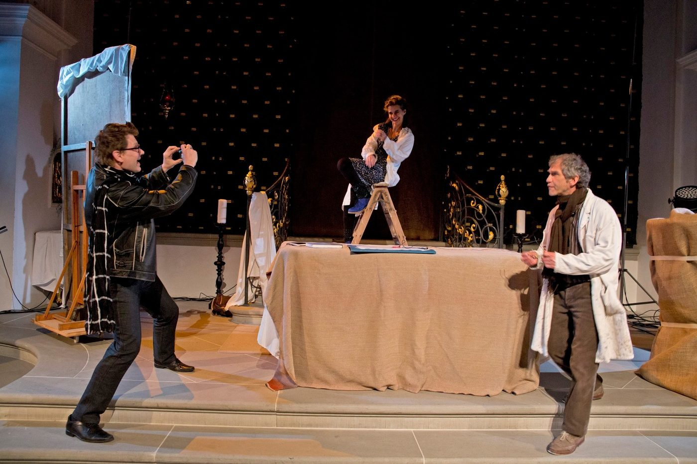
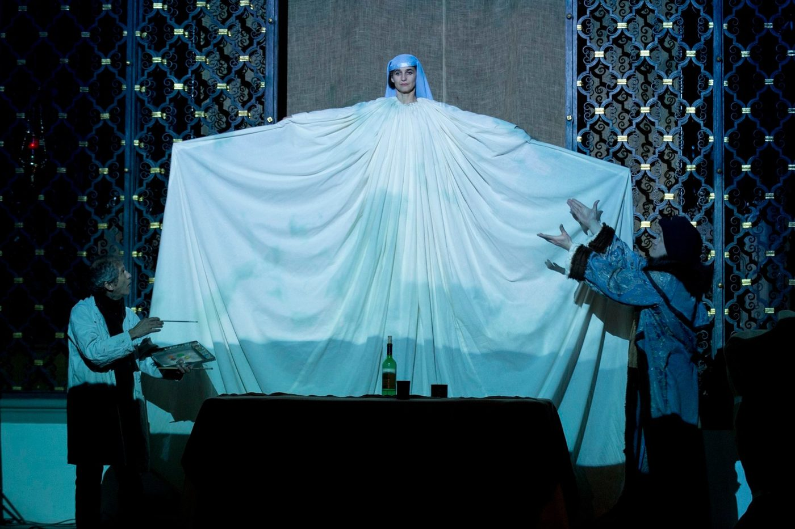
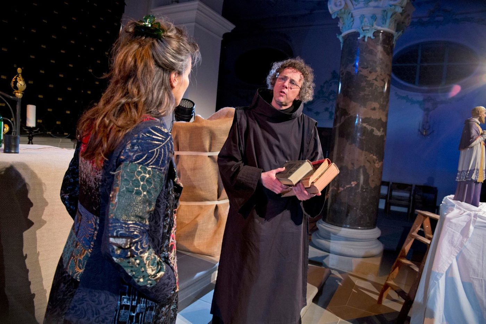

Man sieht nur, was man weiss
Eine Kirchenraum-Inszenierung von Ueli Blum · Premiere am 18. Mai 2013 in der Stiftskirche Beromünster
Ein Restauratoren-Team arbeitet an einem barocken Marienbild, das plötzlich auftaucht. Ist es echt? Ist es gefälscht? Kunstfachmann Kunz stösst bei seiner Suche hinter Staub und Patina an seine Grenzen. Der lebensfreudige Barockmaler Josef Ignaz Weiss taucht auf und konfrontiert Kunz mit Fragen zum Glauben und zur Liebe. Helen, eine junggebliebene Restauratorin mit Leidenschaft für gefälschte Designer-Taschen, ringt mit der Gegenwart. Der gescheiterte Künstler Severin stellt sich endlich der Wahrheit.
N!NA Theater erzählt subtil die Geschichte von vier Individualisten, die sich mit Glauben, Kunst und der Lebenskunst auseinandersetzen. Sie müssen sich Fragen des Seins und der Vergänglichkeit stellen und entscheiden, wann Wahrheit zur Lüge und Lüge zur Wahrheit wird. Der gesamte Kirchenraum wird zur Bühne mit poetischen Bildern, stimmungsvoller Musik, Projektionen, Sprachspielen und Humor.
«Die vier Profi-Schauspieler legten mit ihrer Geschichte um Glaube sowie falsche und wahre (Lebens-)Kunst die Messlatte hoch.» Andrea Willimann, Surseer Woche, 25.4.2013
- Spiel
- Franziska Senn, Reto Baumgartner, Roland Kneubühler, Ueli Blum
- Musik
- Erich A. Radke
- Regie
- Ueli Blum, Adrian Meyer
- Kostüm
- Marie Eve Mérillou
- Bühnenbild
- Valérie Soland
- Licht
- Martin Brun
- Produktionsleitung
- Eva Batz-Deschler



